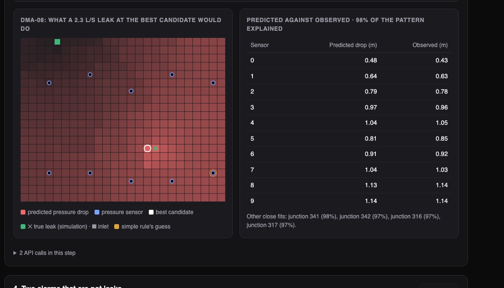
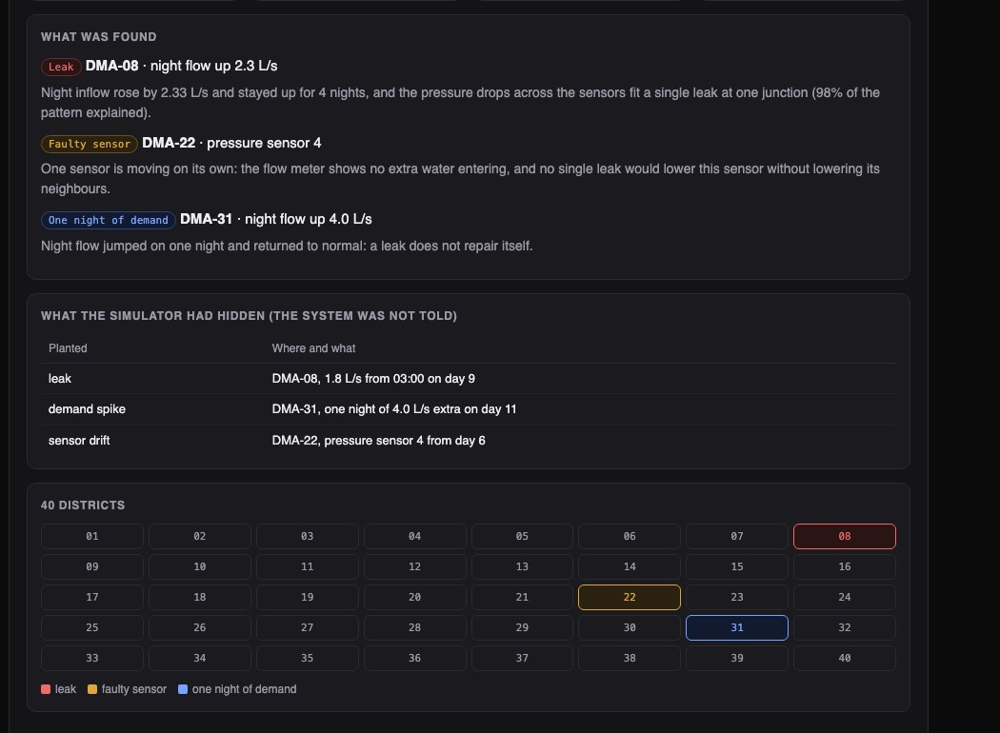
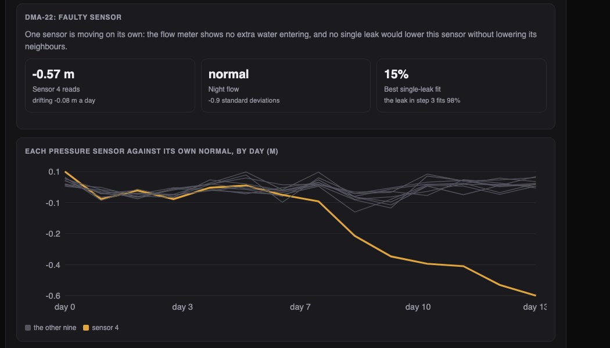

Python · Anomaly detection · Water networks · 2026-10
Is It a Leak, a Bad Sensor, or Just a Busy Night?
A leak-finding system for a simulated water utility with 33,572 pipes. Out of 40 districts it flagged three and gave each the right verdict: one leak, one faulty sensor, one harmless night of heavy use. It placed the leak 60 metres from where it really was, and cut the area a crew has to search from a whole district to 6% of it.

Built from a written blueprint as one vertical slice. The utility is simulated: its pipes, ten years of failures and 591,360 sensor readings come from a generator I wrote, which is what lets me check answers against the truth. The water physics is simplified, and the leak is located with the same model that produced the data, so the location accuracy is a best case. All costs are my assumptions. No language model is used. Not built: a real network, a calibrated hydraulic model, live sensor feeds, maps, Kafka, Terraform, single sign-on.
01 — The problem
Water utilities lose a large share of the water they treat through leaks that never reach the surface. The usual clue is night flow: at 3 am almost nobody uses water, so if a district is still drawing more than usual, something is wrong. But a broken sensor or one night of street cleaning looks similar on a dashboard, and digging up the wrong street is expensive. Can software tell these apart, say where the leak is, and decide which old pipes to replace before they break?
Blueprint 10 of ten in a second build book, built as its demo scenario end to end.
02 — What I built
A Python service on PostgreSQL with a background worker and a web page, started by one docker compose up.
- A simulator of a water utility: 40 districts, each a looped grid of 500 junctions with ten pressure sensors and a flow meter.
- A detector that checks each district's night flow and gives a verdict with its reason.
- A locator that finds which junction best explains the pressure drops.
- Work orders sized to a small search area, refused when nothing needs fixing.
- A failure model and a five-year replacement plan, each tested against a simple rule.
03 — How it was built
- 01
A busy day is not a leak
My first alarm compared each night's flow with the district's normal, and it fired on five ordinary districts out of forty. The cause: some days are simply busier, and a busy day lifts night flow by as much as a small leak. The fix uses how the two differ. A busy day scales the whole day up. A leak adds the same amount at 3 am as at noon. If nights are normally a fixed share of the day's average, the constant extra can be solved for directly.
r = (nf[:tr] / whole[:tr]).mean() # nights as a share of the day, learned from the first five days excess = (nf - r * whole) / (1 - r) # the constant extra flow, in litres per second - 02
Three verdicts, three different pieces of evidence
A leak keeps running, so the extra flow must still be there on the last two nights. A night of heavy use jumps and goes back. A faulty sensor is the odd one: its reading wanders while the flow meter shows no extra water and the other nine sensors stay put. Anything that fits none of these is labelled unexplained instead of being forced into a category.
if (z[-2:] > ALARM_Z).all() and cands: kind = "leak" elif z[tr:].max() > SPIKE_Z: kind = "transient_demand" elif odd.sum() == 1 and others_quiet: kind = "sensor_fault" - 03
Find the junction that explains the pressure drops
A leak lowers pressure most near itself, and a little everywhere downstream. For every one of the 500 junctions, a model of the pipes predicts the pattern of drops a leak there would cause at the ten sensors. The observed drops are compared with all 500 patterns, and the closest match wins. The simple alternative, pointing at the sensor that dropped most, was 600 metres off in the demo.
scale = (sig * drop[:, None]).sum(axis=0) / (sig ** 2).sum(axis=0) # best leak size at each junction err = np.linalg.norm(drop[:, None] - sig * scale[None, :], axis=0) # what that leaves unexplained - 04
Send a crew only where it is needed
The leak gets an urgent work order to survey the 52 pipes within three junctions of the best match, out of 832 in the district. The sensor gets a routine recalibration with no digging. The night of heavy use is refused a work order, with the reason given.
raise Problem(409, "nothing_to_fix", f"this event was classified as {kind}: {reason}") - 05
Which pipes to replace, and a number I did not expect
A model learns from failures in 2016 to 2022 and is tested on 2023 to 2025. Then a plan spends $4 million a year on the pipes where each dollar avoids the most failure cost. It avoids more than twice what replacing the oldest pipes first does. But the same table shows $20 million of replacements avoiding only about $5 million of failures in five years. On my cost assumptions, replacing pipes does not pay for itself in that time. The plan only decides how to lose the least.
order = sorted(pipes, key=lambda x: -avoided(x[1], x[2], 0, years) / x[3]) # failure cost avoided per dollar
04 — Results
The demo. 40 districts checked, 37 normal, three flagged, all three verdicts correct.

The leak was sized at 2.3 litres a second and placed one junction from the truth.

On 600 other simulated cases the thresholds were not tuned on:
| System | Simple | |
|---|---|---|
| False alarms | 0 of 450 | – |
| Leaks found | 129 of 129 | – |
| Within 180 m | 84% | 29% |
| Failures caught | 24% | 16% |
| Cost avoided | $4.9M | $2.2M |
"Simple" is the obvious rule in each case: the sensor that dropped most, or the oldest pipes first. Leaks found counts leaks of 0.5 litres a second and up. Failures caught is the share of real failures among the 5% of pipes ranked riskiest. Cost avoided is failure cost over the five-year plan.
Honest limits. Leaks smaller than 0.5 litres a second were found only 38% of the time; the alarm is set to avoid false call-outs. The location accuracy is a best case, because the model that finds the leak is the model that made the data. A real utility's model of its own pipes is always partly wrong. And the failure model beats "oldest first" only modestly, because pipe failures are rare and mostly chance.
Checks. 29 tests, including: a quiet district is never flagged, a busy week is not called a leak, a resent reading never overwrites a stored one, one utility cannot see or write to another's network, and no year of the plan goes over budget.
05 — What I'd do next
- A real network file and a standard hydraulic solver, to see how much accuracy survives an imperfect model.
- Live readings with nightly running totals instead of re-reading two weeks each time.
- A person's review before a work order goes out.